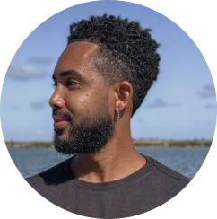

Olá eu sou Marcos Cordeiro, esse cara aqui embaixo 👇
Sou natural do estado da Bahia/Brasil, vivi por muitos anos em Salvador, uma cidade linda, encantadora e cheia de cultura.
Atualmente moro no Porto/Portugal, vivo aqui a um ano e meio e estou adorando, aqui me deparo a todo tempo com pessoas de
vários
lugares do mundo! É uma experiência surreal.
Morar fora do seu país é bem desafiadora, a todo momento precisamos desenvolver novas habilidades,
se expor a sentimentos que não conhecemos e literalmente é um aprendizado diário.
Sabendo de todos esses desafios tenho buscado desenvolver habilidades que me tragam um pouco de conforto e
estudar programação acredito que irá me proporcionar em alguns anos uma qualidade de vida maior
então estou planejando a minha caminhada nessa direção.
Estou gravando toda minha vivência através das minhas rede sociais, youtube e instagram.